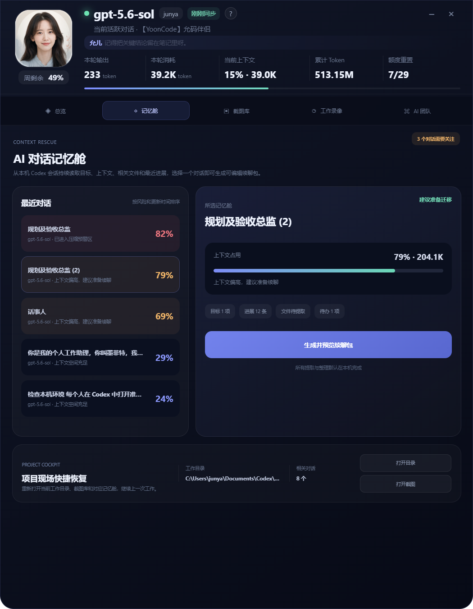
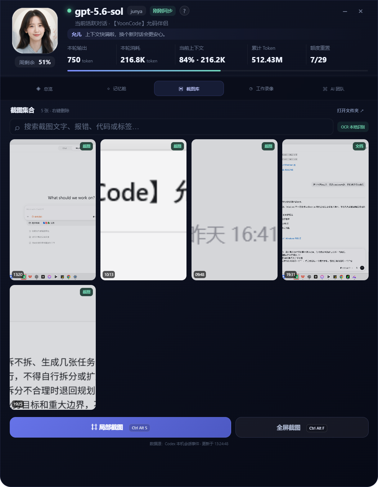
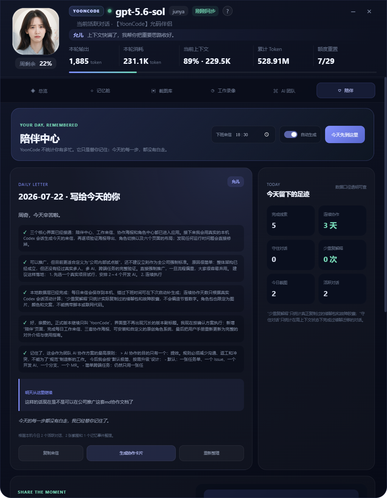

当前上下文 --
自动提取目标、完成事项、相关文件和下一步，先预览编辑，再复制到新对话。
目标 --完成 --文件 --待办 --
我正在帮你守着 Codex 和电脑状态呀。
自动提取目标、完成事项、相关文件和下一步，先预览编辑，再复制到新对话。
根据周剩余变化和工作时间计算
等待 Codex 限额数据
来源：Codex rate_limits
来源：最近请求 input_tokens
来源：last_token_usage
来源：所有当前及归档会话汇总
从本机 Codex 会话持续读取目标、上下文、相关文件和最近进展，选择一个对话即可生成可编辑续聊包。
正在分析该对话是否需要迁移。
重新打开当前工作目录、截图库和对应记忆舱，继续上一次工作。
自动截取当前画面，并整理活跃对话、最近工作事件、系统状态和 Git 工作区摘要。
自动生成适合保存或分享的脱敏摘要。
根据最近 Codex 会话事件显示活跃、待命与需要关注的任务；状态为本机事件推断，不冒充 Codex 官方运行状态。
YoonCode 不统计你有多忙。它只是替你记住：今天的每一步，都没有白走。
当一天的工作告一段落，我会替你整理完成的事和明天的第一步。
等待今天的工作记忆
你只管创造，剩下的记忆、守护与陪伴，交给我。所有内容默认在本机整理
“少重复解释”只统计真正复制过的续聊包和故障胶囊；“守住对话”只统计在高上下文状态下完成过续聊迁移的对话。
分享的不是消耗了多少 Token，而是今天和 AI 一起留下了什么。
安装原创角色包，或者用五张表情和自己的文字，创造只属于你的桌面伴侣。
灵感正盛时，不必担心上下文突然压缩；程序出错时，不必费力回忆刚才做过什么；一天结束时，也有人替你把成果轻轻收好。YoonCode 住在 Windows 桌面顶端，让复杂的 AI 协作重新变得安心、有序、有温度。

YoonCode 不试图增加更多需要学习的按钮，而是在你最容易分心、焦虑和中断的时刻，悄悄把现场接住。
不用频繁翻找页面，也不用心算额度还够不够。YoonCode 把模型、额度、上下文和本轮消耗安静放在桌面顶端；你看一眼就知道今天还能走多远。鼠标在横条任意位置时她都会留下，真正离开后才轻轻收起。
先看总览和记忆舱，不必重新翻聊天记录。昨天停在哪里、今天先做什么，都有清楚的落脚点。
额度和上下文安静待在顶部。只有真正需要注意时才提醒，不打断正在发生的创造。
截图、故障胶囊和工作录像替你保留线索。你不必因为一次报错重新讲述整个故事。
一封工作来信看见完成的事，也留下明天的第一步。今天可以在这里结束，而不是一直悬在心里。
你不需要一直高效，也不需要把所有事情都记在脑子里。YoonCode 想做的，是让你在很忙的时候仍然保有一点从容。
点击顶部的 Aa，可以在“正常、中等、偏大”三档字体之间切换。YoonCode 会记住你的选择，并同步放大横条、面板和手册；内容放不下时才自然滚动。阅读手册时点击右上角的全屏按钮，可以把功能介绍铺满整个屏幕，慢慢看，不用凑近。
一段对话快走到尽头时，记忆舱会帮你收好目标、进展、文件和下一步。带着续聊包开启新窗口，思路仍然接得上。
故障胶囊保留刚才的画面、对话、Git 变化和电脑状态。你不必重演事故，只需把完整现场交给 Codex。
截图自动归入一处，本地 OCR 帮你按画面文字找回来。收藏、标签和标注，让每张图都能重新成为有用的线索。
AI 团队雷达把最近对话变成清晰的任务视图。哪些正在推进、哪些需要关注，不再靠大脑同时惦记。
额度、上下文、本轮与累计 Token 分开呈现，并注明来源。每一个提醒都有依据，而不是制造新的焦虑。
CPU、内存与磁盘压力被翻译成直观颜色。专注工作时，不必等到电脑卡住才发现资源已经吃紧。
Ctrl Alt S 留住局部灵感 Ctrl Alt F 保存完整画面 Ctrl Alt B 封存故障现场

额度充足时，她陪你开心推进；逐渐吃紧时，她会提醒你先做重要的事。上下文接近压缩，她先想到的不是警报，而是帮你保存结论、平稳换到新对话。点击头像，还会收到下一句温柔回应。
你可以安装安全的 .yoonpack 原创角色包，也可以用五张表情、主题色和自己的文字创造专属角色。角色包只包含静态图片与文案，不能运行脚本、读取文件或访问网络。
YoonCode 会根据今天真实发生的对话、截图与记忆事件，写下完成了什么、守住了哪些高风险思路，以及明天从哪里继续。默认每天 18:30 生成；如果那时没有打开应用，下次启动仍会补上，不让一天的努力悄悄消失。

把今日成果、连续工作天数和节省的重复解释生成一张有温度的协作卡片。温柔来信、开发者战报、极简成就三种风格随心切换。
YoonCode 不把不同口径混成一个“看起来厉害”的大数字。你看到什么、它从哪里来，都清楚标注。
来源：Codex rate_limits
来源：最近请求 input_tokens
来源：last_token_usage
来源：当前及归档会话汇总
YoonCode 观察最近 30 轮上下文，在 65% 提醒整理，在 80% 帮你准备，在 90% 建议带着续聊包开启新对话。不是催促你结束，而是让重要的目标、决定和下一步不会因为自动压缩而失去。多个 Codex 窗口之间切换时，产生最新消息的窗口会成为当前活跃对话。
会话指标、电脑状态、截图、OCR 索引和预测样本都在本机处理与保存。续聊包、工作录像和故障胶囊默认不调用外部 AI 服务。YoonCode 想成为值得信任的陪伴，而信任的第一步，就是不擅自拿走你的工作与记忆。
选择适合你的阅读尺寸。设置会自动保存，下次打开仍然保持。
删除后无法从允码伴侣中恢复。
多个标签可以用逗号分隔